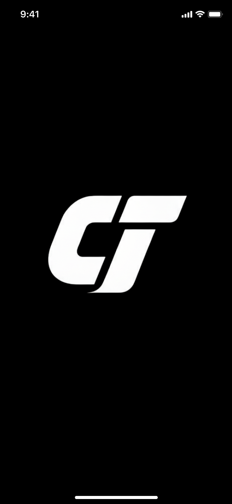
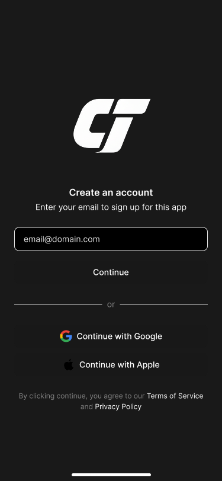
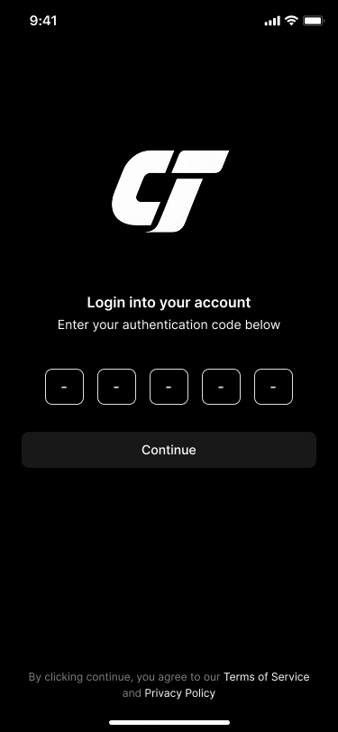
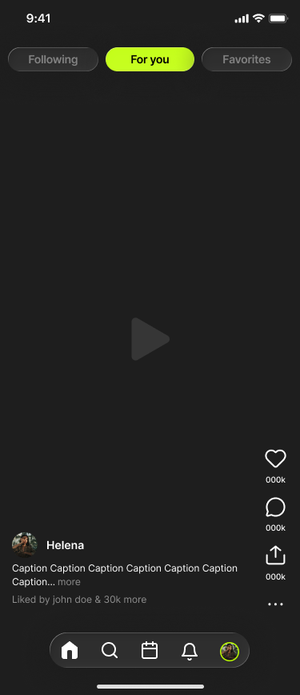
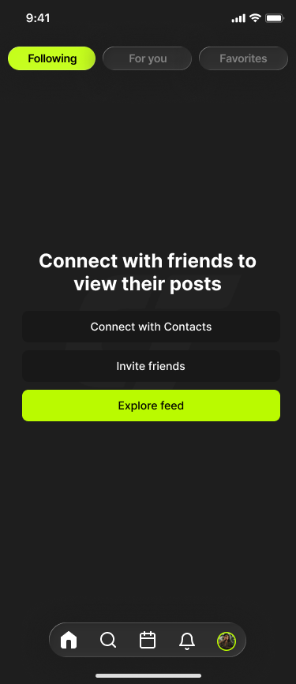
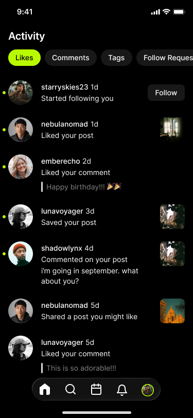
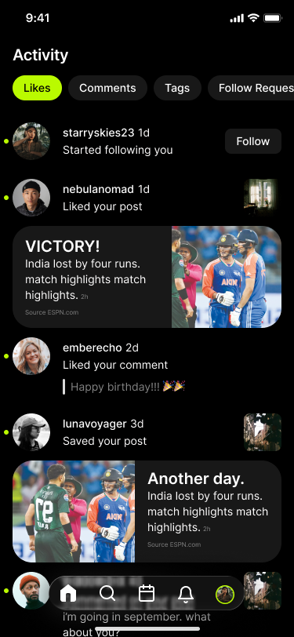
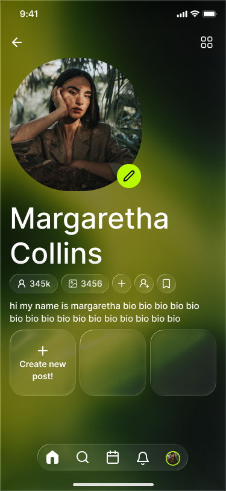
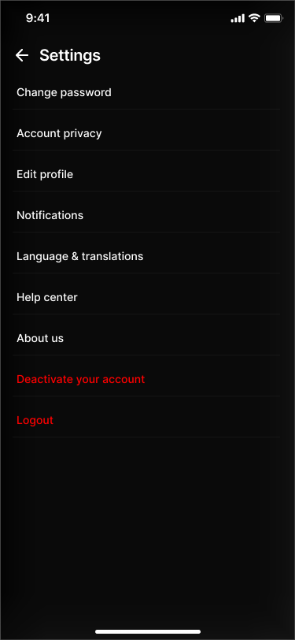
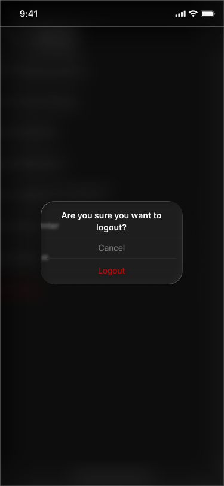

All Your Cricket in One Place
How do you bring live cricket and a social video feed into one app?
CrickTop is a sports app for people who want to stay updated on cricket and other sports, keep track of scores and matches, and share video reels of the moments they care about. I designed the whole product, from the brand to the planning to every screen.
Branding
A bold italic CT mark, a dark interface and one lime accent.
Product Planning
Mapping who the app is for and how scores, reels and messages fit together.
Product Design
Designing every screen, from onboarding to camera, profile and settings.
Fans follow the game in one place and talk about it in another
Scores and fixtures live in one app, while highlights and reactions are scattered across social platforms. For a cricket fan, that means switching apps just to check a score, watch a clip and share an opinion with friends.
One app to follow, watch and share
- Follow live matches and see what is coming up
- Watch, post and react to sports reels
- Connect with other fans through follows, comments and direct messages
The experience had to feel quick during a live match and energetic enough to suit a video-first feed.
Dark by default, with one sharp lime accent
I chose a dark interface with a sharp lime green accent. Black keeps attention on photos and video, which is what a reels-first app is about. The lime gives tabs, buttons and active states a clear signal and matches the pace of live sport. The CT logo is bold and italic, built to feel like movement.
I organized the product into six areas so a new user can understand the app quickly: onboarding, live feed and reels, discover and camera, settings, profile, and direct messages.
5.1 Onboarding that gets out of the way
A simple splash screen leads into sign up with email, Google or Apple. Login and a verification code step follow. The aim was to get fans into the feed fast with as little typing as possible.



Splash screen, sign up and verification code step.
5.2 A feed built for video
The feed is split into Following, For You and Favorites, so fans can switch between their own circle and new content. Likes, comments, sharing and a more menu sit along the edge of the video. Comments and sharing open as sheets, so the viewer never leaves the reel. For new users who follow nobody yet, I designed an empty state that prompts them to connect contacts, invite friends or explore the feed.


The For You video feed and the empty state for new users.
5.3 Discover, activity and the match calendar
Search helps fans find people to follow. The Activity screen sorts likes, comments, tags and follow requests into tabs, so nothing gets buried. The calendar shows matches by team with start times and a live indicator, which ties the sports side of the app to the social side.


Activity screen with social notifications and sports news cards.
5.4 A camera made for sports moments
Sporting moments are short, so posting needed to be quick. The camera includes capture and create modes, filters, a timer, text, and drawing with a color picker. After shooting, the post edit flow covers recent media, caption, location, a comments toggle and sending to friends, with a choice between saving a draft or posting right away.
5.5 Profiles and privacy
Profiles show a bio, follower counts and a grid of posts, with a separate saved page. I also designed a private account state, so fans who want more control can keep their content hidden until they approve followers.

Profile screen with follower and post counts, quick actions and a create post tile.
5.6 Settings and direct messages
Settings cover password, account privacy, profile editing, notifications, language and translation, logout and deactivation. Destructive actions like logging out and deactivating ask for confirmation first, so nothing happens by accident. Direct messages support one to one chats and group chats.


Settings menu and logout confirmation dialog.
Live on Google Play
CrickTop is live on Google Play. The result is a complete product, designed from brand identity through to final screens, that combines live sports tracking and a social video feed in one app.
View CrickTop on Google PlayWhat I took from it
The biggest challenge was balancing two very different needs in one product: the fast, information-first experience of checking a score, and the relaxed, scroll-first experience of a social feed. Keeping the navigation simple while holding that many features together pushed me to think carefully about hierarchy and about which actions deserve space on each screen.
The camera was the other big learning point. Packing filters, timers, text and drawing into a small screen without making it feel crowded meant being strict about what is visible at each step.
Designing the whole product myself, from branding to final screens, taught me how much every early decision shapes the rest. If I continued the project, I would test the flows with real fans and use what I learned to refine the feed and the camera.